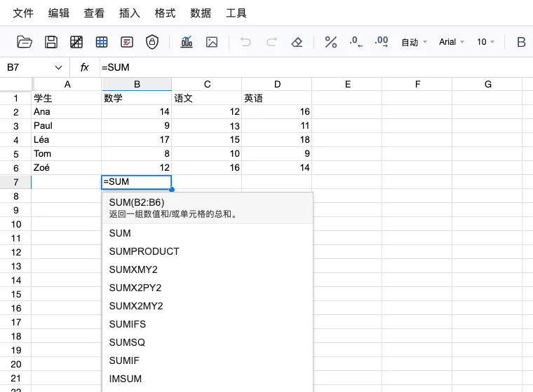
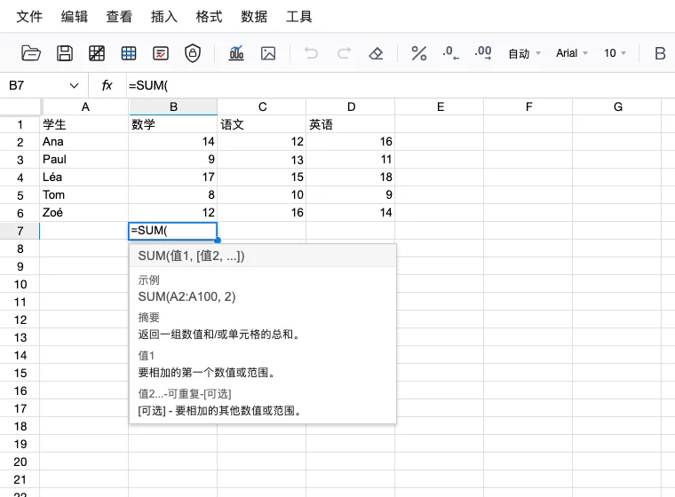
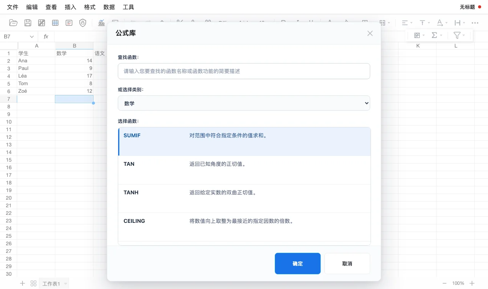

公式
书写公式
公式以 = 开头，包含数字、引号中的文本、单元格引用、运算符和函数。
=B2*2
=(B2+C2+D2)/3
=AVERAGE(B2:B6)
="合计："&SUM(B2:B6)单元格显示结果，公式栏显示公式。依赖于已更改单元格的单元格会立即重新计算。
小数分隔符是小数点，参数之间用逗号分隔：=ROUND(3.14159, 2)。函数名可用小写或大写键入：=sum(B2:B6) 和 =SUM(B2:B6) 都可以。
用鼠标指定单元格
输入公式时，单击工作表的单元格会插入其地址，拖动会插入区域。每个引用在公式和工作表中都有自己的颜色。
自动完成
键入名称的前几个字母后，DocCells 会列出包含这些字母的函数：↑ ↓ 浏览，Enter、Tab 或单击选择。输入左括号后，会显示参数说明。


自动求和
写入求和公式。其箭头提供 求和、平均值、计数、最大值、最小值 和 所有公式：在公式库中，可按名称、说明或类别查找函数。

运算符
| 运算符 | 作用 |
|---|---|
+ - * / | 四则运算 |
^ | 乘方：=2^10 |
% | 百分比：=20%*B2 |
& | 连接文本：=A2&" "&B2 |
= <> | 等于、不等于 |
< > <= >= | 比较 |
( ) | 优先级 |
先乘方，再乘除，然后加减，最后比较。=-2^2 得 −4（Excel 中为 4）。
引用
| 写法 | 含义 |
|---|---|
B2 | 单元格；随填充变化 |
$B$2 | 填充时仍是同一单元格 |
B$2、$B2 | 固定行、固定列 |
B2:D6 | 区域 |
B:B、2:2 | 整列、整行 |
工作表2!B2、'成绩 2'!B2 | 另一张工作表的单元格 |
成绩 | 命名区域 |
向下填充时，=B2*$B$1 变成 =B3*$B$1、=B4*$B$1…
条件
=IF(B2>=10, "及格", "不及格")
=IF(AND(B2>=10, C2>=10), "是", "否")
=SWITCH(A2, "a", 1, "b", 2, 0)
=COUNTIF(B2:B6, ">10")
=SUMIF(A2:A6, "Ana", B2:B6)
=AVERAGEIF(B2:B6, "<10")- 逻辑值写作
TRUE()和FALSE()，带括号。显示为 TRUE 和 FALSE。 - 条件是文本：
">10"、"<>0"、"Ana"。不识别通配符*和?。 - 空单元格用
=B2=""判断；它不等于 0。
在表中查找
=VLOOKUP("Léa", A2:D6, 3, 0)
=INDEX(A2:A6, MATCH(MAX(B2:B6), B2:B6, 0))第一个公式在表的第一列中查找 Léa，返回第三列；最后的参数 0 要求精确匹配。第二个公式给出成绩最好的人的姓名。
日期与时间
日期是天数，时间是一天的一部分：在单元格中可以相加减。
=A2+7
=A3-A2
=DAYS(A3, A2)
=WEEKDAY(A2, 2)由 DATE 或 TODAY 给出的日期必须经过单元格才能相加：=TODAY()+1 得 #VALUE!，但如果 A1 中是 =TODAY()，则 =A1+1 得明天的日期。结果是数字：请设置 日期 格式。
错误
| 显示 | 原因 |
|---|---|
#NAME? | 未知名称：拼写错误、不计算的函数、TRUE 缺少括号、文本缺少引号 |
#VALUE! | 类型不符：需要数字处是文本 |
DIV/0 | 除以零或空单元格 |
#N/A | 找不到值（MATCH、VLOOKUP），或在 DocGeo 之外使用 GEO |
#REF! | 单元格或工作表不存在 |
#NUM! | 数字超出定义域：=SQRT(-1) |
#ERROR! | 公式书写有误，或函数不计算 |
IFERROR 替换函数的错误（#N/A、#NUM!）：=IFERROR(VLOOKUP(E1, A2:D6, 2, 0), "缺席")。它不替换运算的错误（DIV/0、#VALUE!）：要避免除以零，请检查除数，=IF(B2, B3/B2, "")，对零和空单元格都适用。